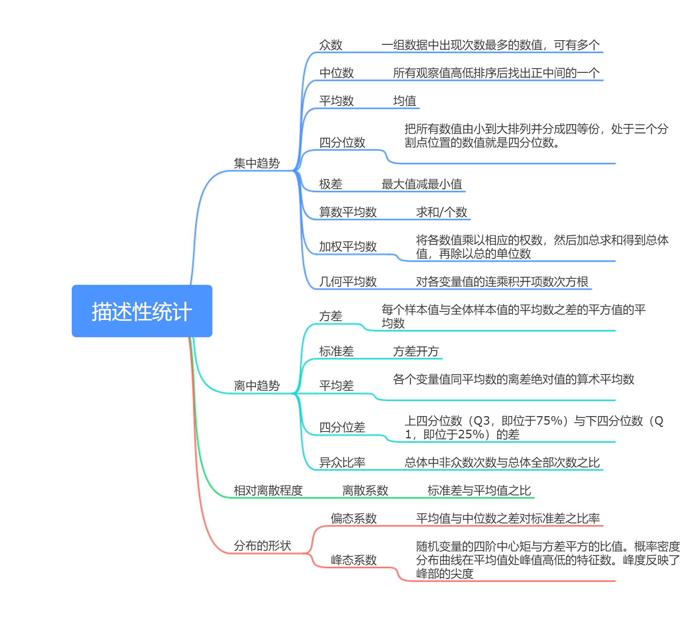

一、Numpy简介
NumPy(Numerical Python) 是 Python 语言的一个扩展程序库，支持大量的维度数组与矩阵运算，此外也针对数组运算提供大量的数学函数库。
NumPy 是一个运行速度非常快的数学库，主要用于数组计算，包含：
NumPy 通常与 SciPy（Scientific Python）和 Matplotlib（绘图库）一起使用， 这种组合广泛用于替代 MatLab，是一个强大的科学计算环境，有助于我们通过 Python 学习数据科学或者机器学习。
SciPy 是一个开源的 Python 算法库和数学工具包。
SciPy 包含的模块有最优化、线性代数、积分、插值、特殊函数、快速傅里叶变换、信号处理和图像处理、常微分方程求解和其他科学与工程中常用的计算。
Matplotlib 是 Python 编程语言及其数值数学扩展包 NumPy 的可视化操作界面。它为利用通用的图形用户界面工具包，如 Tkinter, wxPython, Qt 或 GTK+ 向应用程序嵌入式绘图提供了应用程序接口（API）。
二、描述性统计量

三、描述性统计量实现
1 import numpy as np
2 from scipy import stats
3 from numpy import mean, ptp, var, std
4 data=np.array([17, 19, 26, 29, 35, 19, 21])
5
6 w = [0.1, 0.1, 0.2, 0.1, 0.3, 0.1, 0.1]
7
8 print("排序：",np.sort(data))
9 print("求和：",np.sum(data))
10
11 print("\n集中趋势")
12
13 print("众数：",stats.mode(data)[0][0])
14 print("中位数：",np.median(data))
15 print("平均数：",np.mean(data))
16 print("25%分位数：",np.percentile(data, 25))
17 print("50%分位数：",np.percentile(data, 50))
18 print("75%分位数：",np.percentile(data, 75))
19 print("四分位差：",np.percentile(data, 75)-np.percentile(data, 25))
20
21 print("极差：",ptp(data))
22 print("加权平均数：",np.average(data,weights=w))
23 print("几何平均数：",stats.gmean(data))
24
25 print("\n离中趋势")
26
27 print("方差：",var(data))
28 print("标准差：",std(data))
29 print("平均差：",np.sum(abs(data-np.mean(data)))/len(data))
30 print("异众比率：",1-stats.mode(data)[1][0]/len(data))
31 print("离散系数：",std(data)/np.mean(data))
32 print("偏态系数：",stats.skew(data))
33 print("峰态系数：",stats.kurtosis(data))运行结果：
排序： [17 19 19 21 26 29 35]
求和： 166
集中趋势
众数： 19
中位数： 21.0
平均数： 23.714285714285715
25%分位数： 19.0
50%分位数： 21.0
75%分位数： 27.5
四分位差： 8.5
极差： 18
加权平均数： 26.200000000000003
几何平均数： 22.996368449077114
离中趋势
方差： 36.775510204081634
标准差： 6.0642815076546075
平均差： 5.387755102040816
异众比率： 0.7142857142857143
离散系数： 0.25572271417820636
偏态系数： 0.6820851611428496
峰态系数： -0.8763434634842784